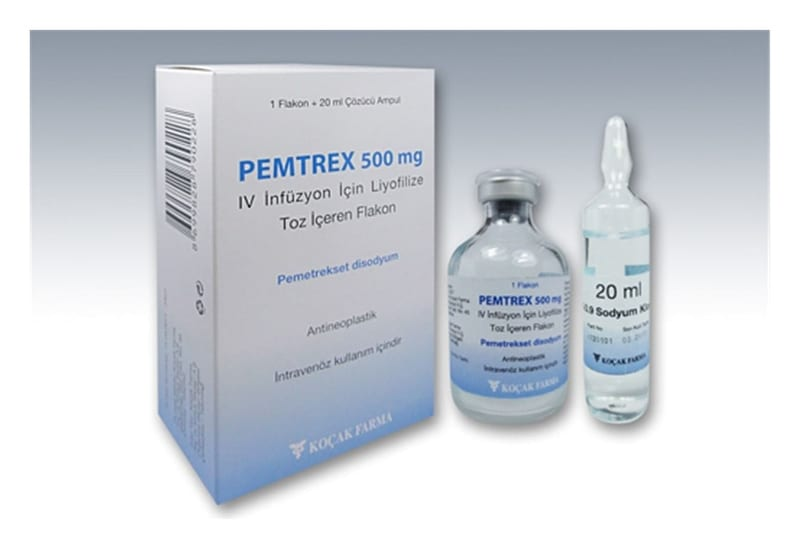

Pemtrex 500 mg IV Inf. İçin Liyofilize Toz İçeren Flakon, 1 Adet

Ne için kullanılır
KT · Bölüm 1PEMTREX, beyaz ila açık sarı veya yeşil-sarı renkte liyofilize tozdur. PEMTREX flakon içinde infüzyon çözeltisi için konsantre toz halde bulunur. Her PEMTREX ambalajında bir adet flakon mevcuttur.
30 ml’lik flakona 20 ml %0. ,9’ luk sodyum klorür enjeksiyonluk çözeltisi ilave edilerek her bir ml’de 25 mg pemetrekset olacak şekilde bir çözelti elde edilir. Sağlık görevliniz gerek gördüğünde uygulama öncesi başka sulandırma da yapabilir. Çözelti hazırlandıktan sonra damar içine yavaş yavaş uygulanır.
PEMTREX, kanser tedavisinde kullanılan bir ilaçtır.
PEMTREX, daha önce kemoterapi almamış, akciğeri saran zarı etkileyen bir kanser türü olan malign plevral mezotelyomalı hastaların tedavisinde, kansere karşı bir başka ilaç olan sisplatin ile birlikte kullanılır.
PEMTREX, daha önce kemoterapi almamış ileri evre akciğer kanseri hastalarının başlangıç tedavisinde sisplatin ile birlikte kullanılır.
PEMTREX ileri evre akciğer kanseri hastalarında hastalığınız tedaviye yanıt vermişse veya başlangıç kemoterapisinden sonra hastalık büyük oranda değişmeden kalmışsa reçete edilebilir.
PEMTREX ayrıca daha önce kemoterapi alan ileri ev re akciğer kanseri hastalarının tedavisinde kullanılır.